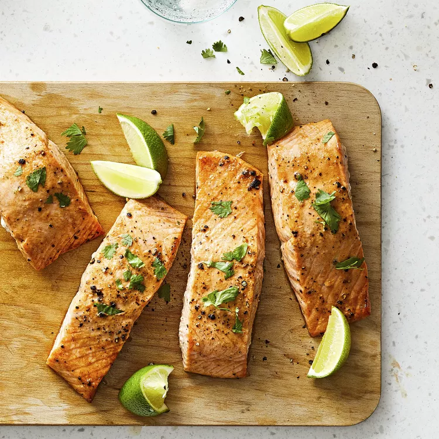

Salmon

Description
Salmon is a popular fish known for its rich, oily texture and distinctive pink-orange flesh. It is prized for its high levels of omega-3 fatty acids, which contribute to its health benefits. Salmon can be prepared in numerous ways, such as grilling, baking, or pan-searing, making it versatile for a wide range of culinary dishes from salads to main courses.
Ingredients
- ¼ cup fresh lime juice
- 1 tablespoon olive oil
- 2 teaspoons Dijon mustard
- ¼ teaspoon ground ginger
- ¼ teaspoon garlic powder
- ¼ teaspoon cayenne pepper
- ⅛ teaspoon black pepper
- 4 salmon steaks
Directions
- Whisk together the lime juice, olive oil, mustard, ginger, garlic, cayenne pepper, and black pepper in a bowl, and pour into a resealable plastic bag. Add the salmon steaks, coat with the marinade, squeeze out excess air, and seal the bag. Marinate in the refrigerator for 1 hour.
- Preheat an outdoor grill for medium heat, and lightly oil grate. Remove the salmon from marinade, and shake off excess. Discard remaining marinade.
- Grill until the fish flakes easily with a fork, 5 to 10 minutes per side depending on thickness.